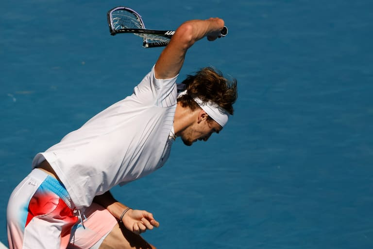
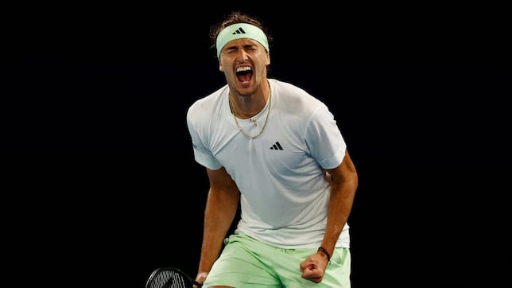

Corría el año 2016 y ya el famoso Big 3 del tenis mundial (Federer, Nadal y Djokovic) comenzaban a entrar en años, aunque sus resultados no decayeron. Una legión de jóvenes promesas asomaban la cabeza como sucesores.
Entre lo mejor de aquellas figuras noveles estaban Medvedev, Tsitsipas, Ruud, Berrettini y Kyrgios; pero entre ellos destacaba uno por su talento, calidad sobre la cancha y saque poderoso: el alemán Alexander Zverev.
Ver a Sasha sobre la cancha siempre fue y sigue siendo un deleite, con un revés a dos manos entre los mejores del circuito y una movilidad sorprendente a pesar de su estatura. Eso lo capitalizó en 2016 cuando dio un golpe sobre la mesa con una victoria sobre Roger Federer y alzó su primer trofeo ATP en San Petersburgo.

La final del US Open 2020 contra Thiem: el inicio de la pesadilla en finales de Grand Slam.El fin de la carrera de Roger hizo que mi apoyo recayera en Sasha. Veía potencial para varios títulos de Grand Slam, pero la decepción afloró año tras año. Si bien tiene un gran palmarés con siete Masters 1000, dos ATP Finals y el oro en Tokio 2020, el Slam se le ha hecho esquivo perdiendo las tres finales que ha logrado.
De esas tres, la más dolida sin dudas fue en US Open 2020 contra Dominic Thiem. Sasha empezó ganando los dos primeros sets 6-2 y 6-4, poniendo a soñar a muchos; pero su rival se levantó y dejó todo listo para un tie-break decisivo en el quinto set donde Sasha sacó para campeonato y no pudo capitalizarlo.

Nuevamente ante Carlos Alcaraz, Zverev volvió a quedarse a la orilla de la gloria.Luego de eso tuvo otras dos oportunidades ante los prodigios de la nueva generación: Roland Garros 2024 ante Carlos Alcaraz y el Abierto de Australia 2025 frente a Jannik Sinner. Ambas terminaron en derrota.
La derrota más reciente la vimos en la noche de este 29 de enero en el primer Grand Slam del año, otra vez contra Alcaraz. Zverev se recuperó de una manera impensada tras perder los dos primeros sets, llevando el duelo al quinto parcial. Incluso estuvo delante 5-4 sirviendo para partido, pero Alcaraz sofocó la rebelión.
Una vez más Alexander Zverev hizo mucho y logró poco. Ya con 28 años y dos puntales claros en el tenis mundial solo queda preguntarnos: ¿Habremos visto ya el prime de Alexander Zverev, o todavía le queda gasolina para ir a buscar su primer Grand Slam?